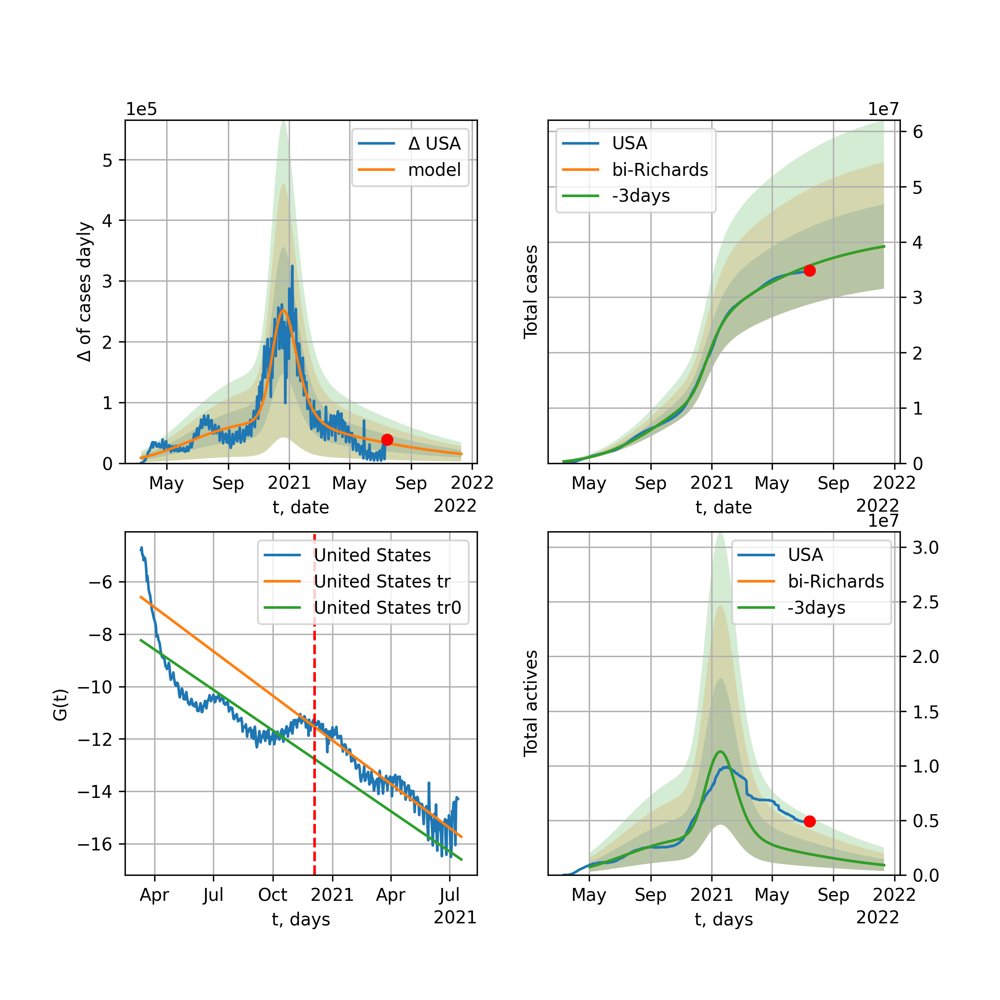
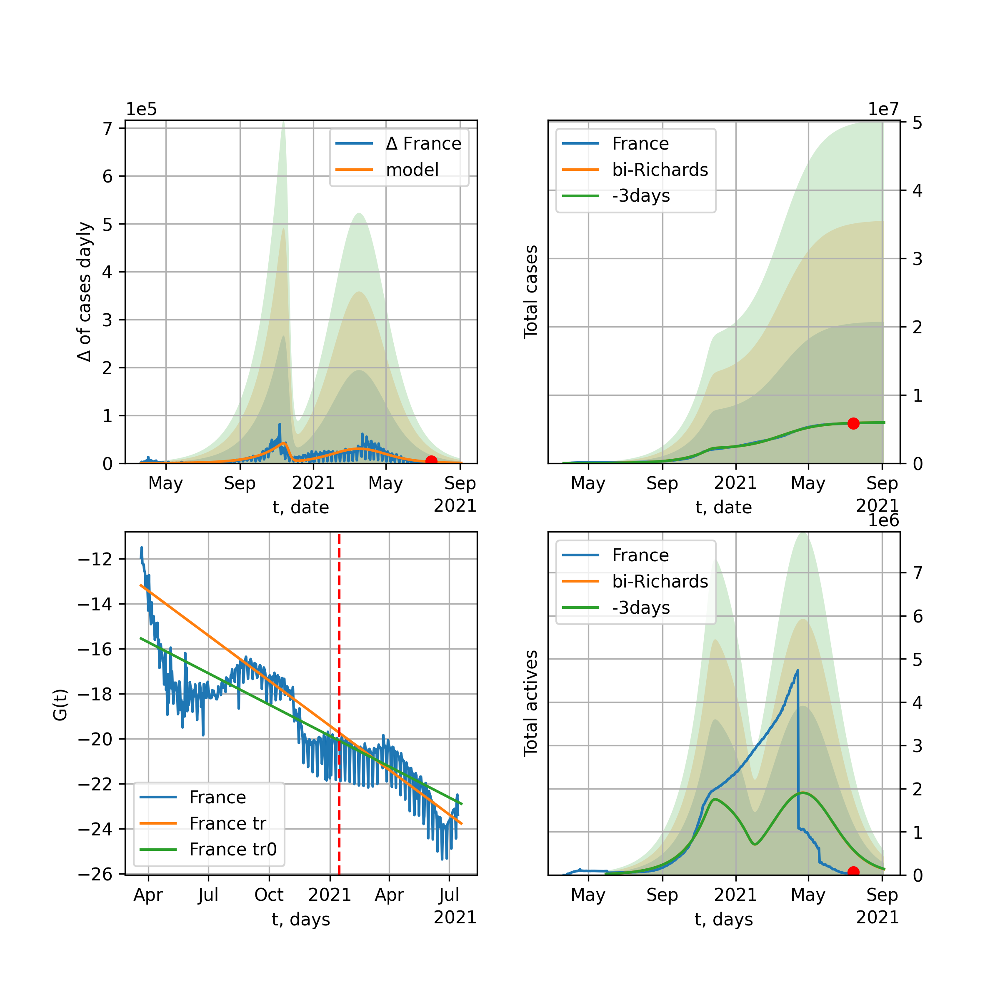
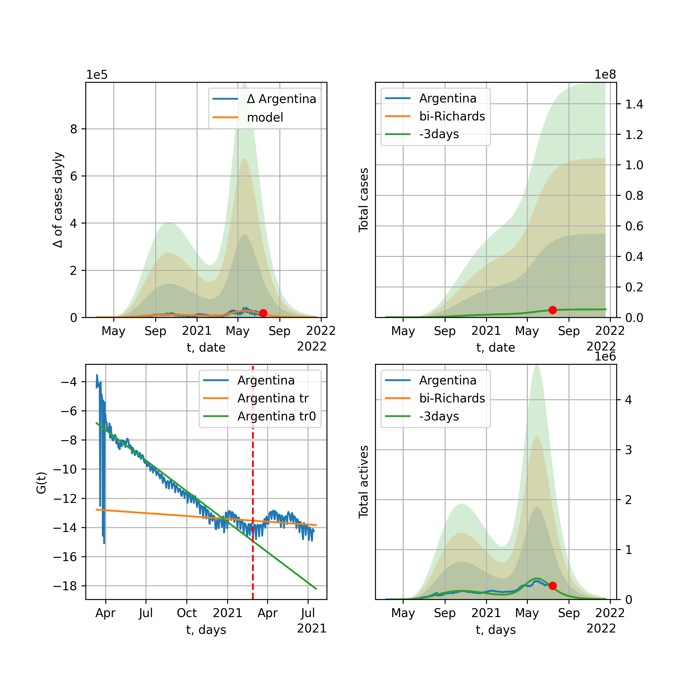

Multi-logistic model of COVID-19 dynamics
Model, code, results
Project maintained by algmaknick Hosted on GitHub Pages — Theme by mattgraham
World

World data at: 2020-06-07
+3 day model MAPE: 0.012012
model: bi-Richards
coeffs: [ 6.80555847e+06 2.70082579e+00 -2.83564677e+01 1.43638550e-02]
S.Korea scenario coeffs: [0.36242246, 2.56241634, 1.84890887, 0.13324732]
rational stdev: 0.088281
forecast at the end of period: +559 days
deltaDaycases: 1733
total cases: 14240820 ± 1257196
total death: 814682 ± 215763
bi-Richards approximation splitting point: 50
trend coefficient of determination: 0.840381
intercept: -2.285079
slope: -0.033362
trend coefficient of determination: 0.386369
intercept: -3.611324
slope: -0.008037
European Union

European Union data at: 2020-06-07
+3 day model MAPE: 0.006921
model: logisticQ
coeffs: [ 1.13444987e+06 3.81632895e-07 3.58037725e+01 -2.60678838e+05]
S.Korea scenario coeffs: [0.35416971, 0.02606324, 4.35859408, 19.30413219]
rational stdev: 0.340125
forecast at the end of period: +139 days
deltaDaycases: 381
total cases: 1528659 ± 519936
total death: 164332 ± 167680
trend coefficient of determination: 0.988384
intercept_: -7.884562992014331
coeffs_: [ 0. -0.25991154 0.00144514]
Brazil

Brazil data at: 2020-06-07
+3 day model MAPE: 0.017416
model: logisticQ
coeffs: [ 1.49491276e+06 5.45064490e-06 9.10653231e+01 -1.29312797e+04]
S.Korea scenario coeffs: [0.35416971, 0.02606324, 4.35859408, 19.30413219]
rational stdev: 0.385532
forecast at the end of period: +419 days
deltaDaycases: 355
total cases: 2014337 ± 776591
total death: 108617 ± 125625
trend coefficient of determination: 0.903778
intercept_: -4.553449843214182
coeffs_: [ 0. -0.24665833 0.00132185]

Brazil data at: 2020-06-07
+3 day model MAPE: 0.002306
model: Richards
coeffs: [7.50903748e+06 1.39693194e-01 4.67976914e+01 1.53757862e-01]
S.Korea scenario coeffs: [0.36242246, 2.56241634, 1.84890887, 0.13324732]
rational stdev: 0.334386
forecast at the end of period: +1049 days
deltaDaycases: 440
total cases: 10169926 ± 3400683
total death: 548383 ± 550115
trend coefficient of determination: 0.328661
intercept: -2.888605
slope: -0.027597
Russia

Russia data at: 2020-06-07
+3 day model MAPE: 0.014346
model: Richards
coeffs: [ 6.41755266e+05 7.82586292e-01 -1.72642184e+01 5.72846537e-02]
S.Korea scenario coeffs: [0.36242246, 2.56241634, 1.84890887, 0.13324732]
rational stdev: 0.324859
forecast at the end of period: +349 days
deltaDaycases: 408
total cases: 846051 ± 274847
total death: 10598 ± 10328
trend coefficient of determination: 0.969815
intercept: -1.814207
slope: -0.038341
USA

USA data at: 2020-06-07
+3 day model MAPE: 0.012787
model: Richards
coeffs: [ 2.29282068e+06 4.04759129e+00 -8.12165310e+01 9.61609441e-03]
S.Korea scenario coeffs: [0.36242246, 2.56241634, 1.84890887, 0.13324732]
rational stdev: 0.329048
forecast at the end of period: +461 days
deltaDaycases: 781
total cases: 3063059 ± 1007892
total death: 171610 ± 169403
trend coefficient of determination: 0.943610
intercept: -1.336372
slope: -0.041753
Spain

Spain data at: 2020-06-07
+3 day model MAPE: 0.000678
model: Richards
coeffs: [ 2.93191410e+05 8.16409187e+00 -5.14099915e+01 7.46814640e-03]
S.Korea scenario coeffs: [0.36242246, 2.56241634, 1.84890887, 0.13324732]
rational stdev: 0.241241
forecast at the end of period: +279 days
deltaDaycases: 124
total cases: 393367 ± 94896
total death: 36983 ± 26765
trend coefficient of determination: 0.962526
intercept: -0.680408
slope: -0.061949
Italy

Italy data at: 2020-06-07
+3 day model MAPE: 0.000814
model: Richards
coeffs: [ 2.37320643e+05 7.22087745e+00 -5.50341389e+01 8.20245289e-03]
S.Korea scenario coeffs: [0.36242246, 2.56241634, 1.84890887, 0.13324732]
rational stdev: 0.073150
forecast at the end of period: +251 days
deltaDaycases: 162
total cases: 314940 ± 23037
total death: 45430 ± 9969
trend coefficient of determination: 0.985525
intercept: -1.074163
slope: -0.056905
United Kingdom

United Kingdom data at: 2020-06-07
+3 day model MAPE: 0.001037
model: Richards
coeffs: [ 3.16623911e+05 3.95035264e+00 -6.21316877e+01 1.17771210e-02]
S.Korea scenario coeffs: [0.36242246, 2.56241634, 1.84890887, 0.13324732]
rational stdev: 0.137990
forecast at the end of period: +349 days
deltaDaycases: 179
total cases: 419499 ± 57886
total death: 59425 ± 24600
trend coefficient of determination: 0.969620
intercept: -1.381058
slope: -0.045644
France

France data at: 2020-06-07
+3 day model MAPE: 0.005940
model: Richards
coeffs: [ 1.48645892e+05 4.36363400e+00 -1.69487185e+01 1.88216648e-02]
S.Korea scenario coeffs: [0.36242246, 2.56241634, 1.84890887, 0.13324732]
rational stdev: 6598.688712
forecast at the end of period: +111 days
deltaDaycases: 454
total cases: 181819 ± 1199769493
total death: 34426 ± 681499372
trend coefficient of determination: 0.712650
intercept: -1.254286
slope: -0.054074
Germany

Germany data at: 2020-06-07
+3 day model MAPE: 0.003459
model: Richards
coeffs: [ 1.81903219e+05 1.12795535e+01 -4.73332857e+01 6.85034335e-03]
S.Korea scenario coeffs: [0.36242246, 2.56241634, 1.84890887, 0.13324732]
rational stdev: 0.229657
forecast at the end of period: +181 days
deltaDaycases: 152
total cases: 241854 ± 55543
total death: 11419 ± 7867
trend coefficient of determination: 0.952762
intercept: -1.315920
slope: -0.061429
Turkey

Turkey data at: 2020-06-07
+3 day model MAPE: 0.007353
model: Richards
coeffs: [ 1.69305365e+05 8.60188301e+00 -4.72714427e+01 7.65470219e-03]
S.Korea scenario coeffs: [0.36242246, 2.56241634, 1.84890887, 0.13324732]
rational stdev: 0.278975
forecast at the end of period: +196 days
deltaDaycases: 287
total cases: 216085 ± 60282
total death: 5959 ± 4987
trend coefficient of determination: 0.827249
intercept: -1.061282
slope: -0.053899
Iran

Iran data at: 2020-06-07
+3 day model MAPE: 0.015948
model: bi-Richards
coeffs: [1.41821783e+05 4.17085777e+00 2.69853853e+00 1.16354392e-02]
S.Korea scenario coeffs: [0.36242246, 2.56241634, 1.84890887, 0.13324732]
rational stdev: 0.286836
forecast at the end of period: +293 days
deltaDaycases: 312
total cases: 262780 ± 75374
total death: 12667 ± 10900
bi-Richards approximation splitting point: 75
trend coefficient of determination: 0.949244
intercept: -0.915801
slope: -0.055155
trend coefficient of determination: 0.107358
intercept: -4.690720
slope: 0.004591
Canada

Canada data at: 2020-06-07
+3 day model MAPE: 0.001443
model: Richards
coeffs: [ 1.10189733e+05 3.03864269e+00 -7.02195541e+01 1.38724805e-02]
S.Korea scenario coeffs: [0.36242246, 2.56241634, 1.84890887, 0.13324732]
rational stdev: 0.174462
forecast at the end of period: +420 days
deltaDaycases: 35
total cases: 147599 ± 25750
total death: 12030 ± 6296
trend coefficient of determination: 0.971160
intercept: -1.596430
slope: -0.043860
Belgium

Belgium data at: 2020-06-07
+3 day model MAPE: 0.001759
model: Richards
coeffs: [ 5.95231543e+04 4.58388504e+00 -3.90884008e+01 1.46525679e-02]
S.Korea scenario coeffs: [0.36242246, 2.56241634, 1.84890887, 0.13324732]
rational stdev: 0.700992
forecast at the end of period: +181 days
deltaDaycases: 87
total cases: 76854 ± 53874
total death: 12450 ± 26182
trend coefficient of determination: 0.955072
intercept: -1.245678
slope: -0.058132
Peru

Peru data at: 2020-06-07
+3 day model MAPE: 0.007890
model: Richards
coeffs: [ 7.09916954e+05 1.05663303e+00 -7.23637431e+01 2.16496562e-02]
S.Korea scenario coeffs: [0.36242246, 2.56241634, 1.84890887, 0.13324732]
rational stdev: 0.299346
forecast at the end of period: +769 days
deltaDaycases: 268
total cases: 930093 ± 278419
total death: 25865 ± 23227
trend coefficient of determination: 0.707920
intercept: -1.550992
slope: -0.026559
Netherlands

Netherlands data at: 2020-06-07
+3 day model MAPE: 0.008510
model: bi-Richards
coeffs: [2.32447185e+03 2.44645734e+01 4.38514865e+01 5.34414215e-03]
rational stdev: 0.141114
forecast at the end of period: +41 days
deltaDaycases: 2
total cases: 48632 ± 6862
total death: 6146 ± 2601
bi-Richards approximation splitting point: 75
trend coefficient of determination: 0.959410
intercept: -0.792776
slope: -0.061582
trend coefficient of determination: 0.019550
intercept: -5.186943
slope: -0.005734
India

India data at: 2020-06-07
+3 day model MAPE: 0.006996
model: Richards
coeffs: [ 4.20093848e+06 3.32626036e-01 -3.87183861e+01 4.60110097e-02]
S.Korea scenario coeffs: [0.36242246, 2.56241634, 1.84890887, 0.13324732]
rational stdev: 0.377094
forecast at the end of period: +1049 days
deltaDaycases: 1728
total cases: 5340084 ± 2013714
total death: 149118 ± 168694
trend coefficient of determination: 0.633551
intercept: -1.855027
slope: -0.021296
Switzerland

Switzerland data at: 2020-06-07
+3 day model MAPE: 0.001318
model: logisticQ
coeffs: [ 3.02898143e+04 6.15017748e-07 2.61540474e+01 -2.29559410e+05]
S.Korea scenario coeffs: [0.35416971, 0.02606324, 4.35859408, 19.30413219]
rational stdev: 0.325686
forecast at the end of period: +69 days
deltaDaycases: 21
total cases: 40718 ± 13261
total death: 2526 ± 2468
trend coefficient of determination: 0.981171
intercept_: -4.120981619410948
coeffs_: [ 0. -0.2889797 0.00153019]
Ecuador

Ecuador data at: 2020-06-07
+3 day model MAPE: 0.000916
model: Richards
coeffs: [ 5.52376811e+04 1.60657903e+00 -5.62728488e+01 2.19099715e-02]
S.Korea scenario coeffs: [0.36242246, 2.56241634, 1.84890887, 0.13324732]
rational stdev: 0.340762
forecast at the end of period: +629 days
deltaDaycases: 4
total cases: 74917 ± 25528
total death: 6291 ± 6431
trend coefficient of determination: 0.203252
intercept: -2.128577
slope: -0.037374
Portugal

Portugal data at: 2020-06-07
+3 day model MAPE: 0.010938
model: bi-Richards
coeffs: [ 2.07188834e+04 2.43910344e+00 -2.55363292e+01 1.45846478e-02]
rational stdev: 1.305977
forecast at the end of period: +209 days
deltaDaycases: 0
total cases: 48873 ± 63827
total death: 2083 ± 8161
bi-Richards approximation splitting point: 61
trend coefficient of determination: 0.883174
intercept: -0.748447
slope: -0.064899
trend coefficient of determination: 0.005720
intercept: -5.174377
slope: 0.002795
Saudi Arabia

Saudi Arabia data at: 2020-06-07
+3 day model MAPE: 0.015025
model: Richards
coeffs: [1.50411870e+05 1.41916790e-01 4.80709785e+01 3.37534585e-01]
S.Korea scenario coeffs: [0.36242246, 2.56241634, 1.84890887, 0.13324732]
rational stdev: 0.282937
forecast at the end of period: +307 days
deltaDaycases: 114
total cases: 197410 ± 55854
total death: 1379 ± 1170
trend coefficient of determination: 0.620745
intercept: -3.344983
slope: -0.048028
Sweden

Sweden data at: 2020-06-07
+3 day model MAPE: 0.023336
model: Richards
coeffs: [ 6.39873902e+04 1.81013524e+00 -9.16888156e+01 1.51416978e-02]
S.Korea scenario coeffs: [0.36242246, 2.56241634, 1.84890887, 0.13324732]
rational stdev: 0.293361
forecast at the end of period: +419 days
deltaDaycases: 78
total cases: 74143 ± 21750
total death: 7722 ± 6795
trend coefficient of determination: 0.821945
intercept: -1.493411
slope: -0.032862
Pakistan

Pakistan data at: 2020-06-07
+3 day model MAPE: 0.042600
model: Richards
coeffs: [ 2.83784634e+06 2.94079516e-01 -6.13001934e+01 4.17834471e-02]
S.Korea scenario coeffs: [0.36242246, 2.56241634, 1.84890887, 0.13324732]
rational stdev: 0.371016
forecast at the end of period: +1189 days
deltaDaycases: 1326
total cases: 3452717 ± 1281012
total death: 68840 ± 76622
trend coefficient of determination: 0.344592
intercept: -2.251879
slope: -0.016107
Ireland

Ireland data at: 2020-06-07
+3 day model MAPE: 0.002922
model: logisticQ
coeffs: [ 2.47443751e+04 9.84938263e-07 3.58673962e+01 -1.22482813e+05]
S.Korea scenario coeffs: [0.35416971, 0.02606324, 4.35859408, 19.30413219]
rational stdev: 0.304163
forecast at the end of period: +111 days
deltaDaycases: 35
total cases: 32896 ± 10005
total death: 2191 ± 1999
trend coefficient of determination: 0.979784
intercept_: -4.105346338486905
coeffs_: [ 0. -0.24440457 0.00117185]
Mexico

Mexico data at: 2020-06-07
+3 day model MAPE: 0.007432
model: Richards
coeffs: [ 6.82421659e+05 5.28932881e-01 -6.47026981e+01 3.70086843e-02]
S.Korea scenario coeffs: [0.36242246, 2.56241634, 1.84890887, 0.13324732]
rational stdev: 0.178300
forecast at the end of period: +909 days
deltaDaycases: 187
total cases: 899900 ± 160452
total death: 105272 ± 56309
trend coefficient of determination: 0.889603
intercept: -2.016002
slope: -0.024322
Singapore

Singapore data at: 2020-06-07
+3 day model MAPE: 0.023453
model: bi-Richards
coeffs: [ 3.14084446e+04 7.48231405e+00 -7.57311843e+00 6.80092434e-03]
S.Korea scenario coeffs: [0.36242246, 2.56241634, 1.84890887, 0.13324732]
rational stdev: 0.259093
forecast at the end of period: +349 days
deltaDaycases: 34
total cases: 49869 ± 12920
total death: 32 ± 24
bi-Richards approximation splitting point: 60
trend coefficient of determination: 0.124605
intercept: -2.316425
slope: -0.021545
trend coefficient of determination: 0.716792
intercept: -0.181232
slope: -0.031849
Chile

Chile data at: 2020-06-07
+3 day model MAPE: 0.048622
model: bi-Richards
coeffs: [1.69138582e+05 6.84844648e-02 7.70354156e+01 2.31540440e+00]
S.Korea scenario coeffs: [0.36242246, 2.56241634, 1.84890887, 0.13324732]
rational stdev: 0.273995
forecast at the end of period: +139 days
deltaDaycases: 180
total cases: 229847 ± 62976
total death: 3752 ± 3084
bi-Richards approximation splitting point: 12
trend coefficient of determination: 0.463696
intercept: -12.107683
slope: -0.621307
trend coefficient of determination: 0.971176
intercept: -18.721329
slope: -0.141811
Israel

Israel data at: 2020-06-07
+3 day model MAPE: 0.000743
model: bi-Richards
coeffs: [1.29293898e+03 1.50510417e+01 6.04420943e+01 1.89774252e-02]
rational stdev: 0.142218
forecast at the end of period: +13 days
deltaDaycases: 5
total cases: 18318 ± 2605
total death: 304 ± 129
bi-Richards approximation splitting point: 70
trend coefficient of determination: 0.929236
intercept: -1.050138
slope: -0.092862
trend coefficient of determination: 0.514172
intercept: -17.454185
slope: 0.148210
Austria

Austria data at: 2020-06-07
+3 day model MAPE: 0.002780
model: logisticQ
coeffs: [ 1.59454814e+04 5.23865197e-07 2.42185370e+01 -3.30896276e+05]
S.Korea scenario coeffs: [0.35416971, 0.02606324, 4.35859408, 19.30413219]
rational stdev: 0.320811
forecast at the end of period: +55 days
deltaDaycases: 11
total cases: 21467 ± 6887
total death: 853 ± 820
trend coefficient of determination: 0.969460
intercept_: -3.1995317942569717
coeffs_: [ 0. -0.31818712 0.00193021]
Belarus

Belarus data at: 2020-06-07
+3 day model MAPE: 0.008534
model: Richards
coeffs: [ 7.02624532e+04 2.30687083e+00 -7.03612878e+01 1.67832814e-02]
S.Korea scenario coeffs: [0.36242246, 2.56241634, 1.84890887, 0.13324732]
rational stdev: 0.170279
forecast at the end of period: +349 days
deltaDaycases: 84
total cases: 88042 ± 14991
total death: 487 ± 248
trend coefficient of determination: 0.920331
intercept: -1.718520
slope: -0.039907
Japan

Japan data at: 2020-06-07
+3 day model MAPE: 0.052673
model: bi-Richards
coeffs: [1.34996382e+03 7.73546200e+00 5.61621818e+01 1.01946653e-02]
rational stdev: 0.713753
forecast at the end of period: +34 days
deltaDaycases: 2
total cases: 17425 ± 12437
total death: 931 ± 1993
bi-Richards approximation splitting point: 115
trend coefficient of determination: 0.000846
intercept: -3.636250
slope: -0.001781
trend coefficient of determination: 0.028373
intercept: -7.678263
slope: 0.011748
Qatar

Qatar data at: 2020-06-07
+3 day model MAPE: 0.014223
model: Richards
coeffs: [1.80603718e+05 1.71934303e-01 2.37077101e+01 1.81569209e-01]
S.Korea scenario coeffs: [0.36242246, 2.56241634, 1.84890887, 0.13324732]
rational stdev: 0.323567
forecast at the end of period: +923 days
deltaDaycases: 1
total cases: 245957 ± 79583
total death: 193 ± 187
trend coefficient of determination: 0.358342
intercept: -3.863546
slope: -0.017165
Poland

Poland data at: 2020-06-07
+3 day model MAPE: 0.015403
model: Richards
coeffs: [ 3.48665395e+04 3.14878397e+00 -1.00919928e+02 9.77501403e-03]
S.Korea scenario coeffs: [0.36242246, 2.56241634, 1.84890887, 0.13324732]
rational stdev: 0.335117
forecast at the end of period: +489 days
deltaDaycases: 26
total cases: 44669 ± 14969
total death: 1945 ± 1955
trend coefficient of determination: 0.799193
intercept: -1.453014
slope: -0.035586
UAE

UAE data at: 2020-06-07
+3 day model MAPE: 0.007678
model: Richards
coeffs: [ 7.53567897e+04 1.16002706e+00 -8.68535710e+01 2.36482133e-02]
S.Korea scenario coeffs: [0.36242246, 2.56241634, 1.84890887, 0.13324732]
rational stdev: 0.162102
forecast at the end of period: +643 days
deltaDaycases: 21
total cases: 100243 ± 16249
total death: 712 ± 346
trend coefficient of determination: 0.895827
intercept: -2.081297
slope: -0.032692
Romania

Romania data at: 2020-06-07
+3 day model MAPE: 0.006694
model: Richards
coeffs: [ 2.22400625e+04 4.58749310e+00 -6.66159842e+01 9.81048041e-03]
S.Korea scenario coeffs: [0.36242246, 2.56241634, 1.84890887, 0.13324732]
rational stdev: 0.210856
forecast at the end of period: +321 days
deltaDaycases: 22
total cases: 28698 ± 6051
total death: 1868 ± 1181
trend coefficient of determination: 0.923156
intercept: -1.333959
slope: -0.042655
Ukraine

Ukraine data at: 2020-06-07
+3 day model MAPE: 0.021780
model: Richards
coeffs: [ 3.44955052e+04 3.21598334e+00 -7.05154979e+01 1.20628376e-02]
S.Korea scenario coeffs: [0.36242246, 2.56241634, 1.84890887, 0.13324732]
rational stdev: 0.227502
forecast at the end of period: +349 days
deltaDaycases: 44
total cases: 42899 ± 9759
total death: 1245 ± 849
trend coefficient of determination: 0.741621
intercept: -1.485283
slope: -0.036583
Indonesia

Indonesia data at: 2020-06-07
+3 day model MAPE: 0.009074
model: Richards
coeffs: [ 9.46115471e+04 1.10314504e+00 -1.35411950e+02 1.69412520e-02]
S.Korea scenario coeffs: [0.36242246, 2.56241634, 1.84890887, 0.13324732]
rational stdev: 0.219767
forecast at the end of period: +937 days
deltaDaycases: 26
total cases: 124429 ± 27345
total death: 7385 ± 4868
trend coefficient of determination: 0.806086
intercept: -2.055436
slope: -0.026570
Bangladesh

Bangladesh data at: 2020-06-07
+3 day model MAPE: 0.014358
model: bi-Richards
coeffs: [ 7.57130506e+05 5.79309425e-01 -5.83784687e+01 3.09929686e-02]
S.Korea scenario coeffs: [0.36242246, 2.56241634, 1.84890887, 0.13324732]
rational stdev: 0.403508
forecast at the end of period: +937 days
deltaDaycases: 318
total cases: 973016 ± 392619
total death: 13137 ± 15902
bi-Richards approximation splitting point: 29
trend coefficient of determination: 0.033583
intercept: -4.307590
slope: 0.050734
trend coefficient of determination: 0.805448
intercept: -1.015619
slope: -0.030533
South_Korea

South Korea data at: 2020-06-07
+3 day model MAPE: 0.006439
model: bi-Richards
coeffs: [ 3.30671272e+03 1.62334950e-01 -8.78334260e+01 -1.84219810e+03 2.34502482e-04]
rational stdev: 0.110104
forecast at the end of period: +41 days
deltaDaycases: 0
total cases: 11212 ± 1234
total death: 259 ± 85
bi-logisticQ approximation splitting point: 25
trend coefficient of determination: 0.936460
intercept: -5.478818
slope: -0.338423
trend coefficient of determination: 0.256000
intercept: -13.542241
slope: -0.023576
Denmark

Denmark data at: 2020-06-07
+3 day model MAPE: 0.002556
model: Richards
coeffs: [ 1.23007695e+04 8.85609870e-01 -2.54215077e+01 5.99868344e-02]
S.Korea scenario coeffs: [0.36242246, 2.56241634, 1.84890887, 0.13324732]
rational stdev: 0.280537
forecast at the end of period: +251 days
deltaDaycases: 8
total cases: 16287 ± 4569
total death: 802 ± 674
trend coefficient of determination: 0.910018
intercept: -1.787415
slope: -0.050625
Serbia

Serbia data at: 2020-06-07
+3 day model MAPE: 0.016350
model: bi-Richards
coeffs: [ 2.80716222e+03 1.26641528e+00 -8.73439872e+00 3.34413889e-02]
rational stdev: 0.135589
forecast at the end of period: +41 days
deltaDaycases: 12
total cases: 12826 ± 1739
total death: 270 ± 109
bi-Richards approximation splitting point: 50
trend coefficient of determination: 0.706664
intercept: -1.281925
slope: -0.051648
trend coefficient of determination: 0.474856
intercept: -2.700761
slope: -0.038682
Kuwait

Kuwait data at: 2020-06-07
+3 day model MAPE: 0.013708
model: bi-Richards
coeffs: [3.58009194e+04 2.85623061e-01 6.38655368e+01 2.90775510e-01]
S.Korea scenario coeffs: [0.36242246, 2.56241634, 1.84890887, 0.13324732]
rational stdev: 0.172257
forecast at the end of period: +188 days
deltaDaycases: 68
total cases: 49246 ± 8482
total death: 408 ± 210
bi-Richards approximation splitting point: 24
trend coefficient of determination: 0.006599
intercept: -4.175305
slope: -0.019797
trend coefficient of determination: 0.613121
intercept: -3.369625
slope: -0.029487
Philippines

Philippines data at: 2020-06-07
+3 day model MAPE: 0.057754
model: Richards
coeffs: [ 5.34215335e+04 1.43969344e+00 -1.72592193e+02 1.21763331e-02]
S.Korea scenario coeffs: [0.36242246, 2.56241634, 1.84890887, 0.13324732]
rational stdev: 0.360898
forecast at the end of period: +755 days
deltaDaycases: 38
total cases: 63878 ± 23053
total death: 2926 ± 3167
trend coefficient of determination: 0.550340
intercept: -1.970744
slope: -0.029103
Norway

Norway data at: 2020-06-07
+3 day model MAPE: 0.002023
model: Richards
coeffs: [ 8.42574659e+03 6.87602513e+00 -4.19982433e+01 1.06682278e-02]
S.Korea scenario coeffs: [0.36242246, 2.56241634, 1.84890887, 0.13324732]
rational stdev: 0.174880
forecast at the end of period: +181 days
deltaDaycases: 7
total cases: 11181 ± 1955
total death: 311 ± 163
trend coefficient of determination: 0.926302
intercept: -1.073269
slope: -0.063686
Czechia

Czechia data at: 2020-06-07
+3 day model MAPE: 0.001034
model: bi-Richards
coeffs: [2.68710329e+03 2.07168853e+00 5.44663127e+00 2.54800266e-02]
rational stdev: 1.079368
forecast at the end of period: +69 days
deltaDaycases: 1
total cases: 10562 ± 11400
total death: 359 ± 1162
bi-Richards approximation splitting point: 59
trend coefficient of determination: 0.414237
intercept: -1.519486
slope: -0.056228
trend coefficient of determination: 0.011297
intercept: -5.100273
slope: -0.004053
Colombia

Colombia data at: 2020-06-07
+3 day model MAPE: 0.018740
model: bi-Richards
coeffs: [ 1.83664773e+05 1.20001712e+00 -4.37697290e+01 2.19156260e-02]
S.Korea scenario coeffs: [0.36242246, 2.56241634, 1.84890887, 0.13324732]
rational stdev: 0.191220
forecast at the end of period: +699 days
deltaDaycases: 77
total cases: 245929 ± 47026
total death: 7891 ± 4526
bi-Richards approximation splitting point: 40
trend coefficient of determination: 0.749587
intercept: -1.037829
slope: -0.064421
trend coefficient of determination: 0.162088
intercept: -2.962768
slope: -0.005130
Australia

Australia data at: 2020-06-07
+3 day model MAPE: 0.001518
model: bi-Richards
coeffs: [ 1.04417389e+03 6.88862022e+00 -4.72626671e+01 7.55073329e-03]
S.Korea scenario coeffs: [0.36242246, 2.56241634, 1.84890887, 0.13324732]
rational stdev: 0.710579
forecast at the end of period: +41 days
deltaDaycases: 0
total cases: 7329 ± 5208
total death: 102 ± 217
bi-Richards approximation splitting point: 50
trend coefficient of determination: 0.755454
intercept: -0.975076
slope: -0.083516
trend coefficient of determination: 0.141026
intercept: -5.343319
slope: -0.015666
Malaysia

Malaysia data at: 2020-06-07
+3 day model MAPE: 0.003853
model: bi-Richards
coeffs: [ 4.83968252e+03 3.07008274e+00 -1.10484867e+01 1.35148280e-02]
S.Korea scenario coeffs: [0.36242246, 2.56241634, 1.84890887, 0.13324732]
rational stdev: 0.150254
forecast at the end of period: +139 days
deltaDaycases: 0
total cases: 11382 ± 1710
total death: 160 ± 72
bi-Richards approximation splitting point: 70
trend coefficient of determination: 0.333674
intercept: -1.837910
slope: -0.045036
trend coefficient of determination: 0.008218
intercept: -4.582363
slope: -0.007734
Dominican Republic

Dominican Republic data at: 2020-06-07
+3 day model MAPE: 0.005674
model: Richards
coeffs: [ 3.65416309e+04 1.17998419e+00 -1.01245166e+02 2.12559928e-02]
S.Korea scenario coeffs: [0.36242246, 2.56241634, 1.84890887, 0.13324732]
rational stdev: 0.160168
forecast at the end of period: +643 days
deltaDaycases: 15
total cases: 47845 ± 7663
total death: 1313 ± 630
trend coefficient of determination: 0.733870
intercept: -2.144854
slope: -0.030973
Egypt

Egypt data at: 2020-06-07
+3 day model MAPE: 0.000606
model: logisticQ
coeffs: [ 2.61437449e+05 1.26651189e-05 1.08788293e+02 -4.11072551e+03]
S.Korea scenario coeffs: [0.35416971, 0.02606324, 4.35859408, 19.30413219]
rational stdev: 0.236045
forecast at the end of period: +524 days
deltaDaycases: 89
total cases: 350547 ± 82744
total death: 12724 ± 9010
trend coefficient of determination: 0.970577
intercept_: -7.642462327402365
coeffs_: [ 0. -0.12277337 0.00064649]
Finland

Finland data at: 2020-06-07
+3 day model MAPE: 0.002070
model: Richards
coeffs: [ 7.48265481e+03 9.97979560e-01 -3.38941689e+01 4.86949345e-02]
S.Korea scenario coeffs: [0.36242246, 2.56241634, 1.84890887, 0.13324732]
rational stdev: 0.152278
forecast at the end of period: +321 days
deltaDaycases: 2
total cases: 10024 ± 1526
total death: 463 ± 211
trend coefficient of determination: 0.841084
intercept: -1.600742
slope: -0.054272
Morocco

Morocco data at: 2020-06-07
+3 day model MAPE: 0.007869
model: logisticQ
coeffs: [ 8.20589769e+03 9.13101464e-07 3.55201003e+01 -9.54719125e+04]
S.Korea scenario coeffs: [0.35416971, 0.02606324, 4.35859408, 19.30413219]
rational stdev: 0.267226
forecast at the end of period: +139 days
deltaDaycases: 8
total cases: 10918 ± 2917
total death: 276 ± 221
trend coefficient of determination: 0.969009
intercept_: -5.333216787714591
coeffs_: [ 0. -0.20176654 0.00118234]
Argentina

Argentina data at: 2020-06-07
+3 day model MAPE: 0.005233
model: Richards
coeffs: [1.63444600e+05 4.54389849e-02 1.13345326e+02 7.53223787e+00]
S.Korea scenario coeffs: [0.36242246, 2.56241634, 1.84890887, 0.13324732]
rational stdev: 0.195903
forecast at the end of period: +174 days
deltaDaycases: 126
total cases: 221643 ± 43420
total death: 6456 ± 3794
trend coefficient of determination: 0.930507
intercept: -51.995546
slope: -0.353917
Algeria

Algeria data at: 2020-06-07
+3 day model MAPE: 0.000791
model: logisticQ
coeffs: [ 1.21880718e+04 1.45208469e-06 4.86507900e+01 -4.21177682e+04]
S.Korea scenario coeffs: [0.35416971, 0.02606324, 4.35859408, 19.30413219]
rational stdev: 0.257608
forecast at the end of period: +195 days
deltaDaycases: 16
total cases: 15883 ± 4091
total death: 1105 ± 853
trend coefficient of determination: 0.950502
intercept_: -6.805267507501326
coeffs_: [ 0. -0.15024859 0.00085838]
Luxembourg

Luxembourg data at: 2020-06-07
+3 day model MAPE: 0.002218
model: Richards
coeffs: [ 3.94443796e+03 2.34466954e+01 -3.98089942e+01 4.50203022e-03]
S.Korea scenario coeffs: [0.36242246, 2.56241634, 1.84890887, 0.13324732]
rational stdev: 0.199514
forecast at the end of period: +125 days
deltaDaycases: 3
total cases: 5286 ± 1054
total death: 143 ± 85
trend coefficient of determination: 0.720291
intercept: -1.771510
slope: -0.067871
Thailand

Thailand data at: 2020-06-07
+3 day model MAPE: 0.002971
model: bi-Richards
coeffs: [ 2.47643622e+02 6.05774831e+00 -4.92439204e+01 7.04126966e-03]
rational stdev: 0.079944
forecast at the end of period: +55 days
deltaDaycases: 0
total cases: 3226 ± 257
total death: 59 ± 14
bi-Richards approximation splitting point: 60
trend coefficient of determination: 0.843263
intercept: -1.243904
slope: -0.117536
trend coefficient of determination: 0.115604
intercept: -13.372267
slope: 0.084233
Hungary

Hungary data at: 2020-06-07
+3 day model MAPE: 0.004744
model: Richards
coeffs: [4.11244231e+03 4.29903602e-01 1.30690197e+00 1.45080963e-01]
S.Korea scenario coeffs: [0.36242246, 2.56241634, 1.84890887, 0.13324732]
rational stdev: 0.053284
forecast at the end of period: +181 days
deltaDaycases: 4
total cases: 5346 ± 284
total death: 729 ± 116
trend coefficient of determination: 0.936442
intercept: -1.812311
slope: -0.057405
Greece

Greece data at: 2020-06-07
+3 day model MAPE: 0.004179
model: logisticQ
coeffs: [ 2.83305271e+03 3.83036996e-07 2.55186571e+01 -2.74312599e+05]
S.Korea scenario coeffs: [0.35416971, 0.02606324, 4.35859408, 19.30413219]
rational stdev: 0.263302
forecast at the end of period: +69 days
deltaDaycases: 3
total cases: 3765 ± 991
total death: 226 ± 178
trend coefficient of determination: 0.925446
intercept_: -3.8465954924830097
coeffs_: [ 0. -0.25065208 0.00152546]
Iraq

Iraq data at: 2020-06-07
+3 day model MAPE: 0.130256
model: bi-Richards
coeffs: [1.16869444e+05 1.39474015e-01 9.65901783e+01 6.00394260e+00]
S.Korea scenario coeffs: [0.36242246, 2.56241634, 1.84890887, 0.13324732]
rational stdev: 0.109709
forecast at the end of period: +167 days
deltaDaycases: 0
total cases: 162977 ± 17880
total death: 4560 ± 1500
bi-Richards approximation splitting point: 15
trend coefficient of determination: 0.972641
intercept: -27.189522
slope: -0.805668
trend coefficient of determination: 0.942220
intercept: -39.207759
slope: -0.213279
Croatia

Croatia data at: 2020-06-05
+3 day model MAPE: 0.001791
model: logisticQ
coeffs: [ 2.20436780e+03 5.83987066e-07 2.75595240e+01 -2.25766953e+05]
S.Korea scenario coeffs: [0.35416971, 0.02606324, 4.35859408, 19.30413219]
rational stdev: 0.315956
forecast at the end of period: +85 days
deltaDaycases: 1
total cases: 2963 ± 936
total death: 135 ± 127
trend coefficient of determination: 0.961524
intercept_: -2.963256038896013
coeffs_: [ 0. -0.20894978 0.00066521]
Iceland

Iceland data at: 2020-06-07
+3 day model MAPE: 0.000121
model: logisticQ
coeffs: [ 1.80327095e+03 7.80111975e-06 1.33313191e+01 -2.26781104e+04]
rational stdev: 0.056090
forecast at the end of period: +13 days
deltaDaycases: 0
total cases: 1803 ± 101
total death: 9 ± 1
trend coefficient of determination: 0.938457
intercept_: -4.892589246471218
coeffs_: [ 0. -0.26483106 0.00138924]
Estonia

Estonia data at: 2020-06-07
+3 day model MAPE: 0.020720
model: bi-Richards
coeffs: [ 8.06679474e+02 1.72601769e+00 -2.64601707e+01 1.93657837e-02]
rational stdev: 0.108942
forecast at the end of period: +104 days
deltaDaycases: 1
total cases: 2519 ± 274
total death: 89 ± 29
bi-Richards approximation splitting point: 50
trend coefficient of determination: 0.743487
intercept: -1.662193
slope: -0.077932
trend coefficient of determination: 0.027001
intercept: -6.882791
slope: 0.012665
Bulgaria

Bulgaria data at: 2020-06-07
+3 day model MAPE: 0.009612
model: Richards
coeffs: [2.87535697e+03 7.92145029e-02 3.20934374e+01 8.04269963e-01]
S.Korea scenario coeffs: [0.36242246, 2.56241634, 1.84890887, 0.13324732]
rational stdev: 0.136948
forecast at the end of period: +349 days
deltaDaycases: 0
total cases: 3914 ± 536
total death: 229 ± 94
trend coefficient of determination: 0.863300
intercept: -6.198741
slope: -0.069461
New Zealand

New Zealand data at: 2020-05-28
+3 day model MAPE: 0.001125
model: logisticQ
coeffs: [ 1.48316442e+03 2.61946481e-06 2.50154651e+01 -9.24244019e+04]
S.Korea scenario coeffs: [0.35416971, 0.02606324, 4.35859408, 19.30413219]
rational stdev: 0.274300
forecast at the end of period: +79 days
deltaDaycases: 0
total cases: 2007 ± 550
total death: 29 ± 23
trend coefficient of determination: 0.902211
intercept_: -3.5729578368920185
coeffs_: [ 0. -0.17986227 0.00021014]
Slovenia

Slovenia data at: 2020-06-07
+3 day model MAPE: 0.000881
model: bi-Richards
coeffs: [-8.70911287 0.40116339 61.91977808 1.10458926]
rational stdev: 0.194353
forecast at the end of period: +41 days
deltaDaycases: 0
total cases: 1479 ± 287
total death: 108 ± 62
bi-Richards approximation splitting point: 75
trend coefficient of determination: 0.895985
intercept: -6.018145
slope: -0.144820
trend coefficient of determination: 0.232384
intercept: -26.066883
slope: 0.117458
Slovakia

Slovakia data at: 2020-06-07
+3 day model MAPE: 0.001307
model: logisticQ
coeffs: [ 1.51167636e+03 2.49009433e-04 2.40055075e+01 -4.96977480e+02]
S.Korea scenario coeffs: [0.35416971, 0.02606324, 4.35859408, 19.30413219]
rational stdev: 0.224277
forecast at the end of period: +97 days
deltaDaycases: 0
total cases: 2042 ± 457
total death: 37 ± 24
trend coefficient of determination: 0.925872
intercept_: -3.6272209556739288
coeffs_: [ 0. -0.24186486 0.00130564]
Lithuania

Lithuania data at: 2020-06-07
+3 day model MAPE: 0.007458
model: bi-Richards
coeffs: [2.93485001e+02 1.27409155e-01 5.88838053e+01 8.98463186e-01]
rational stdev: 0.155548
forecast at the end of period: +12 days
deltaDaycases: 1
total cases: 1736 ± 270
total death: 71 ± 33
bi-Richards approximation splitting point: 48
trend coefficient of determination: 0.890125
intercept: -4.178436
slope: -0.174101
trend coefficient of determination: 0.134381
intercept: -10.684271
slope: -0.019322
Latvia

Latvia data at: 2020-06-06
+3 day model MAPE: 0.005284
model: Richards
coeffs: [ 1.08833208e+03 9.44300057e+00 -7.39636318e+01 5.91997695e-03]
S.Korea scenario coeffs: [0.36242246, 2.56241634, 1.84890887, 0.13324732]
rational stdev: 0.247292
forecast at the end of period: +210 days
deltaDaycases: 1
total cases: 1367 ± 338
total death: 31 ± 22
trend coefficient of determination: 0.542305
intercept: -1.796646
slope: -0.052679
Cyprus

Cyprus data at: 2020-06-07
+3 day model MAPE: 0.005108
model: Richards
coeffs: [ 9.39159768e+02 9.07676093e-01 -1.21109203e+01 9.98951427e-02]
S.Korea scenario coeffs: [0.36242246, 2.56241634, 1.84890887, 0.13324732]
rational stdev: 0.152240
forecast at the end of period: +69 days
deltaDaycases: 2
total cases: 1171 ± 178
total death: 21 ± 9
trend coefficient of determination: 0.764629
intercept: -2.030789
slope: -0.069198
Malta

Malta data at: 2020-06-07
+3 day model MAPE: 0.004380
model: bi-Richards
coeffs: [1.61178013e+02 1.50809788e-01 6.49532002e+01 2.45926569e+00]
rational stdev: 0.209703
forecast at the end of period: +13 days
deltaDaycases: 0
total cases: 621 ± 130
total death: 8 ± 5
bi-Richards approximation splitting point: 50
trend coefficient of determination: 0.910330
intercept: -8.006040
slope: -0.297399
trend coefficient of determination: 0.390220
intercept: -16.260972
slope: -0.065935
Sri Lanka

Sri Lanka data at: 2020-06-07
+3 day model MAPE: 0.009651
model: Richards
coeffs: [ 1.23399176e+04 4.76392880e-01 -1.43492625e+02 2.83978961e-02]
S.Korea scenario coeffs: [0.36242246, 2.56241634, 1.84890887, 0.13324732]
rational stdev: 0.116000
forecast at the end of period: +1189 days
deltaDaycases: 3
total cases: 15892 ± 1843
total death: 95 ± 33
trend coefficient of determination: 0.013439
intercept: -3.671191
slope: -0.006787
References
- Worldometers COVID-19 Coronavirus Pandemic
- Su COVID-19 susijusi gyventojų ir verslo statistika
- Bi-logistic growth
- Least squares
- scikit-learn
- scipy.org
- European Centre for Disease Prevention and Control An agency of the European Union
- Aaron Miller, Mac Josh Reandelar, Kimberly Fasciglione, Violeta Roumenova, Yan Li, Gonzalo H Otazu, Correlation between universal BCG vaccination policy and reduced morbidity and mortality for COVID-19: an epidemiological study, https://doi.org/10.1101/2020.03.24.20042937